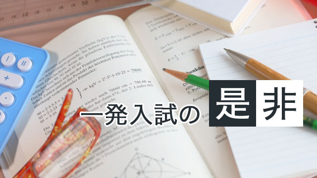

2017年、明けましておめでとうございます。本年もよろしくお願いいたします。
さて、2017年となりました。世間はお正月ということで、仕事を忘れてゆったりできるこの時期ですが、塾講師にとってはまったくそうではありません。というのも、1月14日、15日には、大学受験の最初の試験であるセンター試験が行われるのです。
センター試験は一般的に、「国立大学」を受験する生徒のためのものと思われていますが、実はそうではありません。私立専願の場合でも、近年非常に多くの学校が設定しているセンター利用入試（センター試験の得点のみで合否を決める）に直結します。さらに、センター利用入試で受験をしない一般入試オンリーの生徒であっても、その結果の影響は甚大です。近年では、ある程度のレベルの大学を受験する生徒は国立私立問わずほぼ全員がセンター試験を受験します。ということは、その結果は模試と同じであるといえるのです。各予備校が実施する模試は大体11月で終了します。その後、まさに受験直前期のリアルな実力を測れる試験はセンター試験のほかにはありません。
そんなわけで、受験する生徒も指導する講師も緊張が高まるこの1月第一週から第二週。私自身受験指導を始めてもう大分長くなりますが、やはりまだこの緊張には慣れません。
“一発入試”の是非？
2020年からの大学改革（入試改革）で大きなトピックとなっているのが、“一発勝負の入試”の是非です。現行の大学入試制度では、二年間も三年間も熱心に勉強してきたその成果はたった一回の試験ではかられますから、失敗してしまった場合リカバリーすることはできません。数年にわたる努力の成果を見るならば、ほかに色々やり方があります。今後導入されるであろう高校在学中の試験（何度も挑戦可能）結果の中から一番よい点数のものを試験に使用する形もその一つでしょう。
一方で、一発試験ならではの利点もあります。それは「大人になるための通過儀礼」としての試験です。高校までの生徒たちは「子供」として、努力が評価される世界に生きてきました。しかし、大学入試を境にして「大人」の世界においては努力よりも結果が重視されます。試験当日に風邪を引いてしまいパフォーマンスが発揮できなかったとしたら、それは「かわいそう」ではなく、本人の「準備不足」として処理されます。これは仕事の世界と同じであるといえます。仕事の世界では、どれほど努力を重ねたとしても、結果がでなければ評価はされません。もちろん例外はありますが、「結果が出ていない」とバッサリ切り捨てられても文句は言えないのが大人の（仕事の）世界です。
そもそも一八歳の生徒にこのような経験をさせるべきなのか、あるいは大学入試が通過儀礼である必要があるのか、については様々な議論があるでしょう。しかし、大学入試を終えた生徒たちが一様に「大人」の考え方をするようになるのも事実です。受験に成功した生徒も失敗した生徒も、いずれも甘えがなくなります。それまでは通っていた「言い訳」が全くきかない世界を知り、自身の行動に対する責任感が強くなるのです。
大学の本来の目的を考えれば、選抜試験にこのような通過儀礼としての機能を持たせることはあまり意味がないかも知れません。しかし、一方で、子供が成長して大人の世界で生きていくためには、大人の世界を教える何らかの「体験」が必要でしょう。今後は会社に入ってからその体験をするのかもしれません。私個人としては、キツいことは早めに体験しておいた方がよいと思うのですが…。